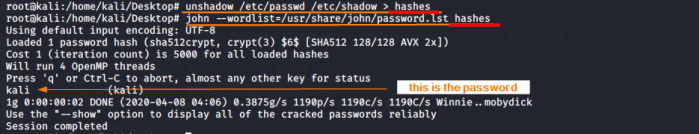
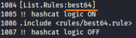
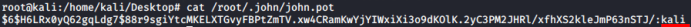
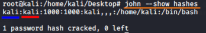

dictionary attack
Some password dictionaries can be installed on kali linux with
after the installation we will find the dictionaries in
/usr/share/seclists/Passwords/syntax dictionary attack John the Ripper
john --wordlist=<custom-wordlist-file> <file-to-crack>
or we can use the default(without mention the wordlist option)
example:For this example we use the
/etc/passwd and
/etc/shadow files on our Kali Linux VM. However, in a real scenario we will use files from a compromised machine and we will redirect the output to our Kali Linux machine.
/usr/share/john/password.lst used is a wordlist preinstalled used to dehash the passwords
Rules (
-rules
)
The
-rules option enable wordlist rules, that are read from [List.Rules:<
wordlist>] in /etc/john/john.conf. This option requires the -wordlist option to be passed as well.
syntax:
john --wordlist=<custom-wordlist-file> <file-to-crack> --rules=<wordlist>
john --wordlist=/usr/share/john/password.lst hashes --rules=best64
We can find best64 rule and the others rules in the john.conf file
Potfile
To show the the hashes and correspondent password cracked with the format →
hash:clearPasswordAlternative way with format →
username:clearPassword{kind=link}